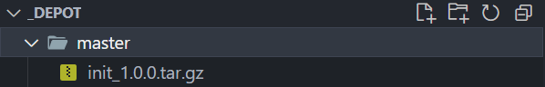
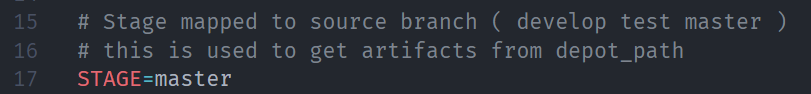

A Tutorial
A Tutorial
Intro
In this tutorial we will build a ToDo application. This application will be developed in our development database and will be updated from time to time in our production database. The production database reflects here only a part of our release pipeline. In a real environment we might need more target stages. For our tutorial this should be sufficient.
To build the whole system locally, I use dockawex. Here, a complete development environment including a second build environment (this is our prod) is built via docker-compose. Absolutely recommended. See: dockawex
Prerequisites
- Two database connections and the ability to connect as sys or another authorized user to create schemas and users.
- Every database with a proper installation of Oracle APEX
just use dockawex and build and start your containers
01. Configuration
First we create a new project directory todos. In this directory we create the _depot folder, where the artifacts of the deployments will be stored and fetched later. In an instance directory we create a subfolder for each target environment. In our case this is the prod folder, which is the productive environment for this tutorial. Furthermore we create the actual working directory called sources. This is the actual development folder. and will be versioned via Git.
# create master directory
$: mkdir todos && cd todos
# create folder to hold depot, target-instance and sources
todos$: mkdir _depot && mkdir -p instances/prod && mkdir sources
# just to show current content
todos$: find
# should produce
# .
# ./_depot
# ./instances
# ./instances/prod
# ./sources
Now we change to our actual source directory, turn on version control and install dbFlow.
# go to sources
todos$: cd sources
# add git
sources$: git init
# add submodul
sources[master]$: git submodule add https://github.com/MaikMichel/dbFlow.git .dbFlow
Now that we have submitted the directory, we can save the current empty state and switch to a new develop branch where we will work.
# add current changes
sources[master]$: git add .
# do the commit
sources[master]$: git commit -m "Inital commit, with dbFlow added as submodule"
# create new branch and jump right in
sources[master]$: git checkout -b develop
02. Setup dbFlow
Now that we have the directory and git set up, we can configure dbFlow. For our application and just for demo purposes a SingleSchema is completely sufficient. Additionally we place the depot a level up and negate the installation of the default features. I leave all other settings in the default.
sources[develop]$: .dbFlow/setup.sh --generate todo
output of project wizard
Generate Project: todo
Which dbFLow project type do you want to create? Single, Multi or Flex [M]: S
When running release tests, what is your prefered branch name [build]:
Would you like to process changelogs during deployment [N]:
Enter database connections [localhost:1521/xepdb1]:
Enter username of admin user (admin, sys, ...) [sys]:
Enter password for sys [leave blank and you will be asked for]: ************
Enter password for user todo [leave blank and you will be asked for]: ************
Enter path to depot [_depot]: ../_depot
Enter stage of this configuration mapped to branch (develop, test, master) [develop]:
Do you wish to generate and install default tooling? (Logger, utPLSQL, teplsql, tapi) [Y]: N
Install with sql(cl) or sqlplus? [sqlplus]:
Enter application IDs (comma separated) you wish to use initialy (100,101,...):
Enter restful Moduls (comma separated) you wish to use initialy (api,test,...):
output of dbFlow, when generating the project
Generating project with following options
Project: todo
Mode: S
Build Branch: build
Create Changelos: N
Schema Changelog proccessed:
Connection: localhost:1521/xepdb1
Admin User: sys
Deployment User: todo
Location depot: ../_depot
Branch is mapped to Stage: develop
SQl commandline: sqlplus
Install default tools: N
Configure with default apps:
Configure with default modules:
Just install environment onyl: NO
... workinging ...
Congratulations!
Your project todo has been successfully created.
Scripts have been added inside directory: db/_setup that allow you
to create the respective schemas, workspaces as well as ACLs and features, as long
as you specified them during the configuration.
todo - directory structure
|-- _depot >> Path to store your build artifacts
|-- .dbFlow >> dbFlow itself
|-- .hooks >> Scripts/Tasks to run pre or post deployment
|-- apex >> APEX applications in subfolders (f123)
|-- db >> All DB Schemas used
| |-- _setup >> Scripts to create schemas, features, workspaces, ...
| |-- .hooks >> Scripts/Tasks to run pre or post db schema deployments
| |-- todo >> Main DB Schema mostly used for SingleMode
|-- reports >> Place all your binaries for upload in a seperate folder here
|-- rest >> REST Modules
| |-- access >> Place all your privileges, roles and clients here (plsql)
| |-- modules >> The REST modules inside seperate folders
|-- static >> StaticFiles used to uploads go here (managed by dbFlux)
apply.env >> Environment configuration added to .gitignore
build.env >> Project configuration
Review folders
dbFLow has now created the complete directory structure for us. Additionally we see the files build.env and apply.env. In the file build.env project specific settings are stored and in the file apply.env environment specific settings are stored. Therefore dbFlow put the apply.env directly on the gitignore list. Later, when it comes to deployment to another environment, this configuration is adapted to the target system accordingly.
dbFlow creates a folder db/_setup. Here we will find the scripts necessary to create the schema and the workspace for APEX. All files can be edited as required. dbFlow will install all existing files in the appropriate order. See: install project
03. Install project definition (setup) to database
Now that the project structure has been successfully created and we have the import scripts reviewed in the setup folder, we can import the project to the database
sources[develop]$: .dbFlow/setup.sh --install
dbFlow will now execute all scripts.
Important
Remember, dbFlow will delete the target schema on its own and create it again. If the target schema already exists, dbFlow will abort the installation.
Only the --force option can be used to force this behavior.
When everything is done, the actual work can begin. In our case, of course, we honor this with a corresponding commit.
sources[develop]$: git add . && git commit -m "dbFlow Project created and applied to dev"
04. Implement the first version of our todo app
I won't go to much into the details. All code fragments are meant to show you the working process with dbFlow as deployment tool and framework.
Download and unpack files of version 1
# Download Release 1
sources[develop]$: curl -o release_1.tar.gz -L https://github.com/MaikMichel/dbFlow-demo-todoapp/archive/refs/tags/1.0.0.tar.gz
# Unpack Application f108 to apex
sources[develop]$: tar -xzvf release_1.tar.gz --directory="apex" "dbFlow-demo-todoapp-1.0.0/apex" --strip-components=2
# Unpack Schema files to db/todo
sources[develop]$: tar -xzvf release_1.tar.gz --directory="db/todo" "dbFlow-demo-todoapp-1.0.0/db/todo" --strip-components=3
# Remove downloaded release_1.tar.gz
rm release_1.tar.gz
Note
If you want to install the demo application with another ID then 108 you can rename the folder as you like (f###)
Install Application
You have downloaded all the files and unpacked them into your prepared dbFlow project. That means we can tell dbFLow to install all the files. All you have to do is to build an initial version and give it the version name "install". dbFlow will then directly install the freshly built version into the current environment.
sources[develop]$: .dbFlow/build.sh --init --version install
Then you can familiarize yourself with the application and the files it contains. In the schema you will find the tasks table and corresponding constraints, indexes and triggers. Additionally you will find the package apx_tasks_util, which contains the business logic of our application.
When you go to your APEX instance, you can log in with the default user wsadmin. When you log in for the first time, you will have to enter a new password. The initial password is always the username. Unless you have changed it before installing the setup. See file: db/_setup/workspaces/todo/create_01_user_wsadmin.sql

The application is a simple task management.

Now that we have our first version installed, we commit our current state.
sources[develop]$: git add .
sources[develop]$: git commit -m "Version 1 of ToDo App"
Deploy Application
Now we have finished version 1 and want to deploy it to the production environment right away. To do this, we are now building our first deployment, our initial patch. The concept, which dbFlow is based on, assumes that there is a corresponding branch per target environment. (See: Concept)
Therefore we now merge our current state in the branch develop to the master branch, our target branch.
sources[develop]$: git checkout master
sources[master]$: git merge develop
Now we create the initial deployment for our production environment.
sources[master]$: .dbFlow/build.sh --init --version 1.0.0
As soon as the build of an artifact is executed by the master branch, dbFlow will ask if a tag with the corresponding version should be committed. In our case we can skip that by entering N. dbFlow will now place the deployment artifact in the master folder in the depot.

The target depot is always a sub directory with the same name as the branch from which the artifact is created.
05. Prepare Target Instance
The target instances in this tutorial are all accessible from development. In a real world scenario, they will be located on other hosts.
In the preparations we have already stored our directory structure. Now we want to distribute our current application to the target instance.
Copy Configuration
In this step we copy the current configuration to the instance directory.
sources[master]$: .dbFlow/setup.sh --copyto "../instances/prod"
dbFlow will now copy the db/_setup directory and the build.env and apply.env files to the target directory. Afterwards dbFlow will also add itself as a submodule in this directory.
Let's go to the instance directory and modify some configurations.
sources[master]$: cd ../instances/prod
instances/prod[master]$: code apply.env
I use VisualStudio Code to edit the file
apply.envbut you could any other editor too.
Edit TNS
Since the copy of the configuration of course still points to the same database environment, it must now be adapted. For this we change the corresponding entry in the file ../instances/prod/apply.env.
In our case, this is now the xepdb2 instead of xepdb1.
Edit Stage
Additionally we adjust the entry STAGE, because this points to the branch folder in the depot, which corresponds to our target stage. All artifacts that dbFlow imports are expected here. Unless you use the --noextract option when importing.

Edit Depot
Because we have an additional level in the directory tree, we also have to adjust the path to the depot and change it from ../_depot to ../../_depot.
Install project definition (setup) to target database
Now we can install the setup meaning our foundation of the application on the target database.
instances/prod[master]$: .dbFlow/setup.sh --install
06. Install first version to target instance
Now that we have everything set up, we can simply deploy the previously deployed artifact to the target instance.
instances/prod[master]$: .dbFlow/apply.sh --init --version 1.0.0
Since we want to do an
inithere, dbFlow will ask you if you really want to do this, cause aninitwill ALWAYS make all target schemas empty (delete all objects). For a CI/CD environment you can prevent this by setting the environment variable DBFLOW_JENKINS="YES".
Now you should be able to visit our ToDo Application on your target instance.
Because the target instance folder is also a Git folder, we can now commit everything to keep a proper history of our deployments in to that stage.
instances/prod[master]$: git add . && git commit -m "1.0.0"
07. Implement the next version of our todo app
We will have to go to our development folder and checkout the develop branch.
instances/prod[master]$: cd ../../sources
sources[master]$: git checkout develop
sources[develop]$:
Download and unpack files of version 2
# Download Release 2
sources[develop]$: curl -o release_2.tar.gz -L https://github.com/MaikMichel/dbFlow-demo-todoapp/archive/refs/tags/1.1.0.tar.gz
# Unpack Application f108 to apex
sources[develop]$: tar -xzvf release_2.tar.gz --directory="apex" "dbFlow-demo-todoapp-1.1.0/apex" --strip-components=2
# Unpack Schema files to db/todo
sources[develop]$: tar -xzvf release_2.tar.gz --directory="db/todo" "dbFlow-demo-todoapp-1.1.0/db/todo" --strip-components=3
# Remove downloaded release_2.tar.gz
rm release_2.tar.gz
Note
If you want to install the demo application with another ID then 108 you can rename the folder as you like (f###). Keep in mind, that in the case you have to remove the previous application folder.
Install Changes to development environment
After you extracted the changes from version 2 of the app you should have see the following changes.

Let's add them an commit the changes.
sources[develop]$: git add .
You can ignore the version.md file here. This file will allways be created when applying an artifact. Normaly this would never happen in development. This is just because we installed the sources, downloaded from github, as patches.
Now install changed files to develop environment by building a patch and installing it instantly.
sources[develop]$: .dbFlow/build.sh --patch --version install --cached
Remember, when using "
install" as version identifier dbFlow will apply the patch immediatly.
Note
The flag --cached tells dbFlow to include only the staged files. This is a suiteable hint just for your development environment. This is about installing the extracted files of the zip directly.
We will commit the changes in order to be ready to build the first patch for out target environment.
sources[develop]$: git add . && git commit -m "Version 2 of ToDo App"
Install Changes to production environment
To deploy an artifact to the production environment, we have to merge the changes to our target branch: master.
sources[develop]$: git checkout master
sources[master]$: git merge develop
Now create the patch itself
sources[master]$: .dbFlow/build.sh --patch --version 1.1.0
dbFlow will ask you to tag this specific version. This happens, when you build on main or master branch. You can ignore this at this moment. Keep in mind, that you can turn this off whenn running inside a CI/CD environment.
dbFlow has now shipped the patch to the depot (../_depot/master).
To apply the patch to production we just have to go to the predefined instance directory and apply the patch.
sources[master]$: cd ../instances/prod
instances/prod[master]$: .dbFlow/apply.sh --patch --version 1.1.0
Thats it. After that, your production instance should reflect the current changes and display the version on the footer.